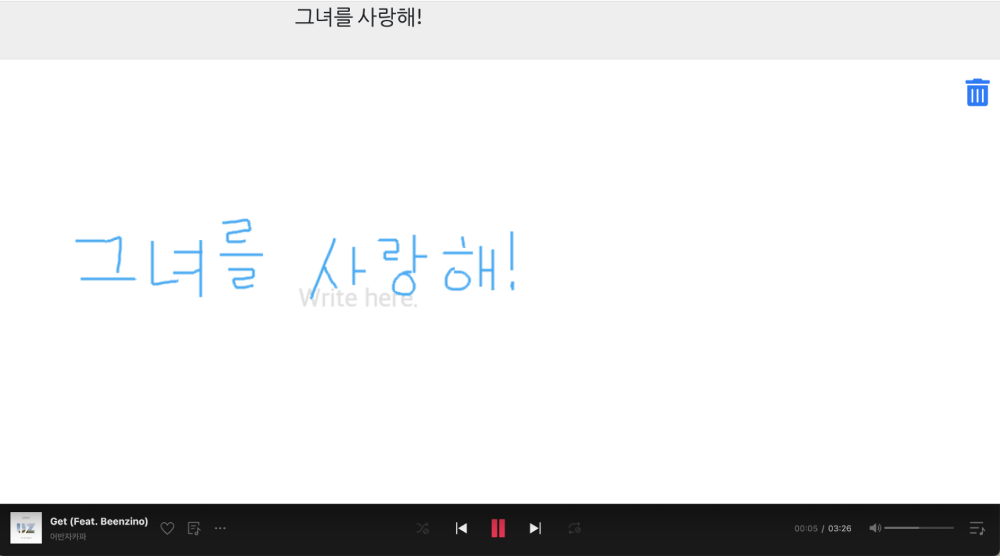
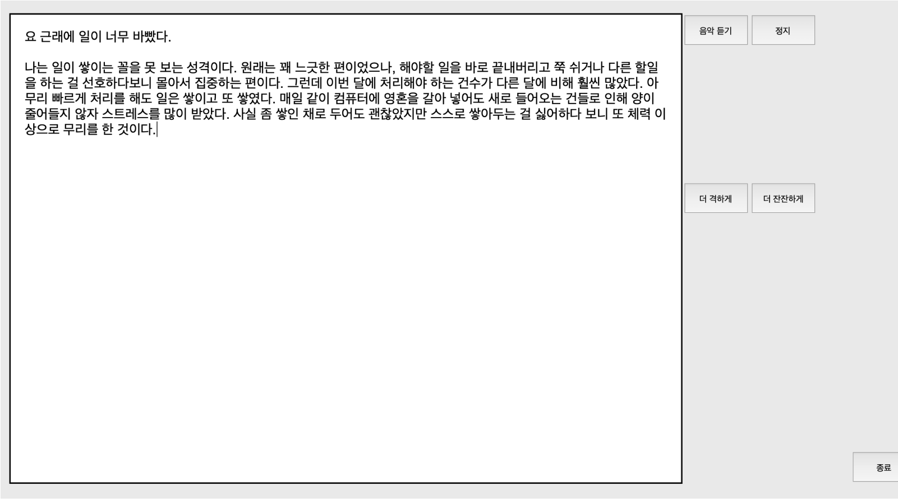

Mooden
Individual project | 2022
Mooden, an AI diary, enhances the art of writing by playing emotionally resonant songs that match the diary's sentiments. As users write, Mooden dynamically reflects their emotions in real-time through music. If the music doesn't match the user's emotion, intuitive options allow for easy changes, keeping the writing experience deeply personal.
Listening to music while writing boosts concentration and can deepen the writing experience. Mooden, with AI-based emotion analysis and smart music recommendations, interacts with users as if alive, guiding them on their writing journey.
Mooden was honored with the KAIST Department of Industrial Design's Excellence Award for its exceptional research process and achievements. It also received praise during its exhibition at Dongdaemun Design Plaza, one of Korea's prominent cultural venues.
Listening to music while writing boosts concentration and can deepen the writing experience. Mooden, with AI-based emotion analysis and smart music recommendations, interacts with users as if alive, guiding them on their writing journey.
Mooden was honored with the KAIST Department of Industrial Design's Excellence Award for its exceptional research process and achievements. It also received praise during its exhibition at Dongdaemun Design Plaza, one of Korea's prominent cultural venues.

Mooden went through several prototyping stages of validating idea's value, improving suitable music playback accuracy and enhancing user experience. With an intuitive feature for changing music based on current emotions and continuous user feedback, Mooden evolved into a fully immersive and personalized writing companion.
Mooden employed a text-to-emotion emotion analysis AI model. To recommend music based on emotions, I personally developed an emotion-music correlation matrix using data from relevant research and user surveys. The system was implemented with JavaScript and HTML.
Mooden employed a text-to-emotion emotion analysis AI model. To recommend music based on emotions, I personally developed an emotion-music correlation matrix using data from relevant research and user surveys. The system was implemented with JavaScript and HTML.

